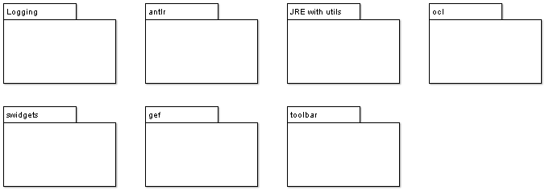

These subsystems are in fact imported libraries and are not developed as part of ArgoUML.
There is a very simple dependency structure: All ArgoUML subsystems may depend on them.
Not all imported libraries belong to this layer. Some imported libraries that only affect parts of the system, like the mdr libraries only affecting the model subsystem, and the commons-io currently only affecting the C++ subsystem are part of that subsystem instead.
All these subsystems are started and initiated (if needed) from the Application subsystem, see <<Subsystem>> Application.
Logging - see <<Subsystem>> Logging.
- JRE with utils. This includes all libraries that are part of the standard JRE.
- Antlr. ANother Tool for Language Recognition, is a framework for constructing recognizers, compilers, and translators from grammatical descriptions. ArgoUML uses ANTLR to process Java source code.
- Used by reverse engineering subsystems.
OCL - see <<Subsystem>> OCL. Location: tudresden.ocl
swidgets. Location: org.tigris.swidgets
gef. Location: org.tigris.gef
- GEF stands for Graph Editing Framework. It is the package which controls most of the graphical aspects of ArgoUML.
toolbar. Location: org.tigris.toolbar
